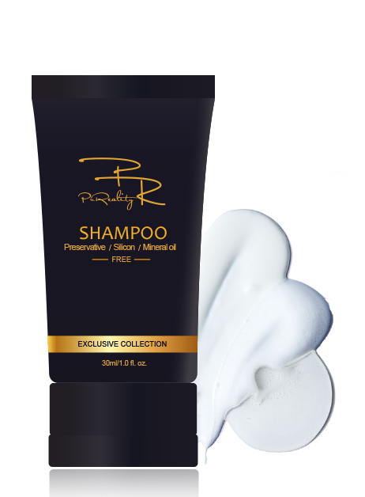

FOR ALL HAIR TYPES
PARABEN & SILICON & MINERAL OIL FREE
DESIGNED IN NEW ZEALAND
30ml／1.0.fl.oz

Multiple surfactants and plant oils derived cleansers are combined to create a creamy lather
that
gently
yet thoroughly cleanses the hair. Oxidized Corn Oil and Apple Seed Extract help add fullness and
impart
softness and shine. Suitable for all hair and scalp types when mildness is desired.
DIRECTIONS: Lather your hair and rinse foam. If contact with eyes, rinse them immediately.